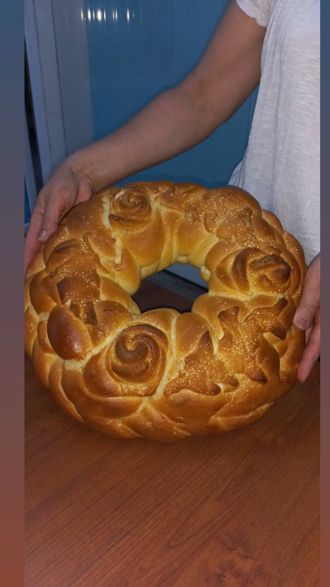

Produsele noastre
Pască cu brânză sau azimă

Pasca este preparată în ajunul Învierii. Adevărata pască este aceea care se taie în bucățele mici, se pune în pachețele și se duce la biserică pentru a fi sfințită. Bucățile de pască sunt duse acasă și păstrate pentru a-i face pe credincioși părtașii binecuvântării lui Dumnezeu, crezându-se a avea puterea de a alunga bolile și necazurile.
Cozonac cu stafide
Cozonac simplu cu stafide, coajă confiată de portocale și unt făcut după o rețetă veche de familie. Cel mai aromat și gustos cozonac cu făină Manitoba.Un cozonac tradițional adevărat trebuie să aibă ingrediente de calitate (unt, ouă, zahăr, arome naturale, făină bună) și să fie bine lucrat, frământat, dospit și modelat astfel încât să aibă această structură atât de râvnită de toată lumea.
Cozonac cu cremă de ciocolată
Cozonacul cu cremă de ciocolată este un desert fabulos cu gust intens de ciocolată. Cozonacul este dulcele ce nu lipseste niciodata de pe masa noastra in zi de sarbatoare. Acesta are o aroma deosebita pe care o raspandeste in toata casa, el ne aduce sarbatoarea in casa.
Cozonac cu mac
Cozonacul cu mac (cremă de mac ) ,este preparat dupa o reșetă tradițională de cozonac pufos , cu amestec de arome delicioase și ușor de preparat. Cozonac cu mac, apetisant , cu multă umplutură aromată și cremoasă.
Colaci simpli
Împletiţi manual, cu mult suflet şi dibăcie pentru mese de sărbătoare, daruri sau alte elemente ritualice întâlnite în mediul rural. Colacul simplu este unul dintre cei mai populari colaci tradiționali moldovenești. Pe vremea când părinții noștri erau copii, acesti colaci se preparau la brutariile din sat sau de către o gospodină mai priceputa, iar acum gospodinele brutăriei noastre muncesc pentru a readuce gustul copilăriei.
Colaci pentru ceremonii rituale
Produs cu împletitură bogată , fabricat din aluat dcozonac , destinat pentru ceremonii rituale. Colacul este un fel de paine dospita, avand formă de inel sau formă rotundă cu diverse ornamente și împletituri. Colacii se pregătesc, în special, în preajma sărbătorilor, de Sfintele Paști, de Crăciun, când sunt oferiți ca și pomană, pentru pomenirea mortilor. Dar se mai pregatesc si pentru inmormantari, pentru colindatorii care prevestesc nasterea Domnului, nunți și diferite ceremonii.
Pâine la tavă
Pâine albă , simplă și pufoasă , coaptă în fomă de cozonac (TIP „CĂRĂMIDĂ” SAU TOAST). Pâine cu miez moale și coajă subțire, crocantă, perfectă pentru sandvișuri reci sau calde. O pâine paralelipipedică care se feliază ușor în felii egale, frumoase.
Pâine împletită-Spicușor
Pâinea împletită este o pâine extrem de moale și de pufoasă, care se menține moale zile in șir, mai mult dâcat pâinea obișnuită. Nu e greu de făcut, are căteva secrete, pe care poate le știti, poate ca nu.
Franzele
Franzelă este denumirea unei pâini preparată din făină albă, de formă alungită și mai puțin crescută. Are miezul foarte pufos, dar și ușor dens, iar coaja subțire și crocantă. Rețeta este inspirată din bucătăria franțuzească și se poate prepara cu ușurință în propria bucătărie.
Fursecuri
Fursecuri cu unt si gem de caise – niște fursecuri delicioase și ușor de preparat. Sunt atat de fragilee încat se topesc în gură. Prăjituri mici, rapide, din aluat fraged (cu forme variate).
Pâine cu tărâțe

Nutritionistii sustin superioritatea painii cu tarate fata de cea alba, ultima continand de trei ori mai putine vitamine, iar magneziu, calciu si fosfor de cinci ori mai putin decat cea de tarate. in plus, aportul caloric al taratelor e scazut, adica nu ingrasa.